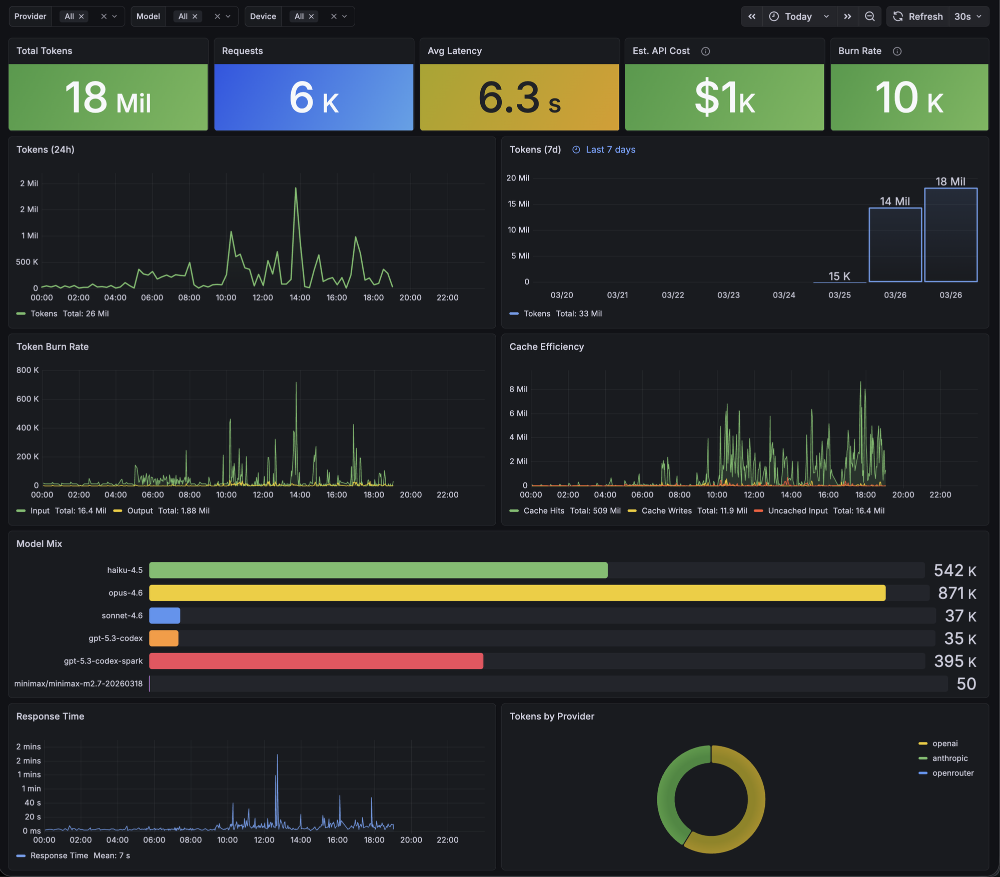

toktap is a proxy that sits between your AI tools and provider APIs. It pulls token usage out of SSE streams and writes it to InfluxDB. Nothing gets buffered, nothing gets modified. Your tools don’t know it’s there.

The dashboard ships pre-loaded. Usage by provider, model, device, and harness. All data in InfluxDB, so you can build whatever views you want.
“You have to use tokens aggressively to create something remarkable. You have to let it rip.”
— Garry Tan
Provider dashboards show API usage, but not aggregated token consumption across providers, devices, or tools. They don’t show when you’re productive or how usage breaks down across your setup.
toktap gives you that visibility. Not to cut back, but to make sure every token is doing real work.
It’s a proxy. Requests go through it, responses come back through it, and it pulls token counts out of the stream on the way back.
Point your tools at toktap instead of the provider API directly. It forwards everything upstream. Same headers, same body, same API key.
When the response streams back, toktap reads the SSE events and pulls out token usage. It doesn’t buffer the response or change anything. Your tools get the exact same bytes.
Token counts, model, provider, device, harness. All written to InfluxDB async. Query it in Grafana or however you want.
Optionally capture full conversations — request bodies, response bodies, every SSE event — as daily JSONL files. Useful for building training datasets, debugging, or auditing.
services: toktap: environment: RECORDER_PATH: /data/recordings volumes: - ./recordings:/data/recordings
One file per day: 2026-03-29.jsonl. Each line is a complete record. Disabled by default — no overhead when off.
Every route is defined in routes.yaml. Upstream URL, provider name, a couple of optional flags. Need another one? Add a few lines and reload.
routes: anthropic: upstream: https://api.anthropic.com provider: anthropic openai: upstream: https://api.openai.com provider: openai inject_stream_options: true openrouter: upstream: https://openrouter.ai provider: openrouter inject_stream_options: true
1. Start toktap
# with docker compose (includes InfluxDB + Grafana) $ git clone https://github.com/voska/toktap && cd toktap $ docker compose up -d # or standalone (bring your own InfluxDB) $ docker run -p 8080:8080 \ -e INFLUXDB_URL=http://host:8086 \ ghcr.io/voska/toktap
2. Point your tools at it
# Claude Code $ export ANTHROPIC_BASE_URL=http://localhost:8080/anthropic # Codex CLI $ export OPENAI_BASE_URL=http://localhost:8080/openai/v1
One env var per provider. Your API keys don’t change.
3. Open localhost:3000
Your usage is being tracked.
Anthropic and OpenAI both support custom base URLs in their SDKs. So do Claude Code, Codex CLI, and anything built on them. Set ANTHROPIC_BASE_URL or OPENAI_BASE_URL and everything routes through toktap.